Perform differential expression testing on a Seurat object or a
SummarizedExperiment bulk object.
Users have the flexibility to specify custom cell groups, marker types, and
various options for DE analysis.
Usage
RunDEtest(object = NULL, ..., srt = NULL)
# S3 method for class 'Seurat'
RunDEtest(
object,
group.by = NULL,
group1 = NULL,
group2 = NULL,
ident.1 = NULL,
ident.2 = NULL,
cells1 = NULL,
cells2 = NULL,
cells.1 = NULL,
cells.2 = NULL,
features = NULL,
feature_type = c("gene", "peak", "cCRE"),
markers_type = c("all", "paired", "conserved", "disturbed"),
grouping.var = NULL,
meta.method = c("maximump", "minimump", "wilkinsonp", "meanp", "sump", "votep"),
test.use = "wilcox",
only.pos = TRUE,
fc.threshold = 1.5,
logfc.threshold = NULL,
base = 2,
pseudocount.use = 1,
mean.fxn = NULL,
min.pct = 0.1,
min.diff.pct = -Inf,
max.cells.per.ident = Inf,
latent.vars = NULL,
min.cells.feature = 3,
min.cells.group = 3,
norm.method = "LogNormalize",
sample_col = NULL,
condition_col = NULL,
bulk_assay = "counts",
p.adjust.method = "bonferroni",
layer = "data",
assay = NULL,
seed = 11,
verbose = TRUE,
cores = 1,
...
)
# S3 method for class 'SummarizedExperiment'
RunDEtest(
object,
group.by = NULL,
group1 = NULL,
group2 = NULL,
cells1 = NULL,
cells2 = NULL,
features = NULL,
feature_type = c("gene", "peak", "cCRE"),
markers_type = c("all", "paired", "conserved", "disturbed"),
grouping.var = NULL,
meta.method = c("maximump", "minimump", "wilkinsonp", "meanp", "sump", "votep"),
test.use = "edgeR",
only.pos = TRUE,
fc.threshold = 1.5,
base = 2,
pseudocount.use = 1,
mean.fxn = NULL,
min.pct = 0.1,
min.diff.pct = -Inf,
max.cells.per.ident = Inf,
latent.vars = NULL,
min.cells.feature = 3,
min.cells.group = 3,
norm.method = "LogNormalize",
sample_col = NULL,
condition_col = NULL,
bulk_assay = "counts",
p.adjust.method = "bonferroni",
layer = "counts",
assay = NULL,
seed = 11,
verbose = TRUE,
cores = 1,
...
)Arguments
- object
A
Seuratobject or aSummarizedExperimentobject.- ...
Additional arguments to pass to the Seurat::FindMarkers function.
- srt
Compatibility alias for
object.- group.by
A grouping variable in the dataset to define the groups or conditions for the differential test. If not provided, the function uses the "active.ident" variable in the Seurat object.
- group1
A vector of cell IDs or a character vector specifying the cells that belong to the first group. If both group.by and group1 are provided, group1 takes precedence. For sample-level methods (
"edgeR","limma","DESeq2", and"dream"), this parameter is interpreted as the first condition label.- group2
A vector of cell IDs or a character vector specifying the cells that belong to the second group. This parameter is only used when group.by or group1 is provided. For sample-level methods (
"edgeR","limma","DESeq2", and"dream"), this parameter is interpreted as the second condition label.- ident.1, ident.2
Seurat-style aliases for
group1andgroup2.- cells1
A vector of cell IDs specifying the cells that belong to group1. If provided, group1 is ignored.
- cells2
A vector of cell IDs specifying the cells that belong to group2. This parameter is only used when cells1 is provided.
- cells.1, cells.2
Seurat-style aliases for
cells1andcells2.- features
A vector of feature names specifying the features to consider for the differential test. If not provided, all features in the dataset are considered.
- feature_type
Feature type used for differential testing. Default is
"gene".- markers_type
A character value specifying the type of markers to find. Possible values are "all", "paired", "conserved", and "disturbed". Sample-level methods (
"edgeR","limma","DESeq2", and"dream") currently support only"all".- grouping.var
A character value specifying the grouping variable for finding conserved or disturbed markers. This parameter is only used when markers_type is "conserved" or "disturbed".
- meta.method
A character value specifying the method to use for combining p-values in the conserved markers test. Possible values are "maximump", "minimump", "wilkinsonp", "meanp", "sump", and "votep".
- test.use
Differential testing method.
"edgeR","limma","DESeq2", and"dream"run sample-level pseudobulk differential testing onSeuratinput and bulk DE onSummarizedExperimentinput.- only.pos
Only return positive markers (FALSE by default)
- fc.threshold
A numeric value used to filter genes for testing based on their average fold change between/among the two groups. Default is
1.5.- logfc.threshold
Seurat-style log fold-change threshold. When provided, it is converted to
fc.threshold = base^logfc.threshold.- base
The base with respect to which logarithms are computed.
- pseudocount.use
Pseudocount to add to averaged expression values when calculating logFC. 1 by default.
- mean.fxn
Function to use for fold change or average difference calculation. The default depends on the the value of
fc.slot:"counts" : difference in the log of the mean counts, with pseudocount.
"data" : difference in the log of the average exponentiated data, with pseudocount. This adjusts for differences in sequencing depth between cells, and assumes that "data" has been log-normalized.
"scale.data" : difference in the means of scale.data.
- min.pct
only test genes that are detected in a minimum fraction of min.pct cells in either of the two populations. Meant to speed up the function by not testing genes that are very infrequently expressed. Default is 0.01
- min.diff.pct
only test genes that show a minimum difference in the fraction of detection between the two groups. Set to -Inf by default
- max.cells.per.ident
Down sample each identity class to a max number. Default is no downsampling. Not activated by default (set to Inf)
- latent.vars
Variables to test, used only when
test.useis one of 'LR', 'negbinom', 'poisson', or 'MAST'- min.cells.feature
Minimum number of cells expressing the feature in at least one of the two groups, currently only used for poisson and negative binomial tests
- min.cells.group
Minimum number of cells in one of the groups
- norm.method
Normalization method for fold change calculation when layer is 'data'. Default is
"LogNormalize".- sample_col
Metadata column storing biological sample IDs. Required when
test.useis a sample-level pseudobulk method onSeurat.- condition_col
Metadata column storing condition labels. Required when
test.useis a sample-level pseudobulk method onSeurat, and required forSummarizedExperimentinput.- bulk_assay
Assay name used as the bulk counts matrix for
SummarizedExperimentinput.- p.adjust.method
A character value specifying the method to use for adjusting p-values. Default is
"bonferroni".- layer
Which layer to use. Default is
data.- assay
Assay to use in differential expression testing
- seed
Random seed for reproducibility. Default is
11.- verbose
Whether to print the message. Default is
TRUE.- cores
The number of cores to use for parallelization with foreach::foreach. Default is
1.
Examples
data(pancreas_sub)
pancreas_sub <- standard_scop(pancreas_sub)
#> ℹ [2026-05-25 10:36:51] Start standard processing workflow...
#> ℹ [2026-05-25 10:36:52] Checking a list of <Seurat>...
#> ! [2026-05-25 10:36:52] Data 1/1 of the `srt_list` is "unknown"
#> ℹ [2026-05-25 10:36:52] Perform `NormalizeData()` with `normalization.method = 'LogNormalize'` on 1/1 of `srt_list`...
#> ℹ [2026-05-25 10:36:53] Perform `Seurat::FindVariableFeatures()` on 1/1 of `srt_list`...
#> ℹ [2026-05-25 10:36:54] Use the separate HVF from `srt_list`
#> ℹ [2026-05-25 10:36:54] Number of available HVF: 2000
#> ℹ [2026-05-25 10:36:54] Finished check
#> ℹ [2026-05-25 10:36:54] Perform `Seurat::ScaleData()`
#> ℹ [2026-05-25 10:36:54] Perform pca linear dimension reduction
#> ℹ [2026-05-25 10:36:55] Use stored estimated dimensions 1:23 for Standardpca
#> ℹ [2026-05-25 10:36:55] Perform `Seurat::FindClusters()` with `cluster_algorithm = 'louvain'` and `cluster_resolution = 0.6`
#> ℹ [2026-05-25 10:36:55] Reorder clusters...
#> ℹ [2026-05-25 10:36:55] Skip `log1p()` because `layer = data` is not "counts"
#> ℹ [2026-05-25 10:36:55] Perform umap nonlinear dimension reduction
#> ℹ [2026-05-25 10:36:55] Perform umap nonlinear dimension reduction using Standardpca (1:23)
#> ℹ [2026-05-25 10:37:00] Perform umap nonlinear dimension reduction using Standardpca (1:23)
#> ✔ [2026-05-25 10:37:05] Standard processing workflow completed
pancreas_sub <- RunDEtest(
pancreas_sub,
group.by = "SubCellType",
only.pos = FALSE
)
#> ℹ [2026-05-25 10:37:05] Data type is log-normalized
#> ℹ [2026-05-25 10:37:05] Start differential expression test
#> ℹ [2026-05-25 10:37:05] Find all markers(wilcox) among [1] 8 groups...
#> ℹ [2026-05-25 10:37:05] Using 1 core
#> ⠙ [2026-05-25 10:37:05] Running for Ductal [1/8] ■ 12% | ETA: 2s
#> ⠹ [2026-05-25 10:37:05] Running for Ngn3-low-EP [4/8] ■■■■■ 50% | ETA: 1s
#> ✔ [2026-05-25 10:37:05] Completed 8 tasks in 2.3s
#>
#> ℹ [2026-05-25 10:37:05] Building results
#> ✔ [2026-05-25 10:37:08] Differential expression test completed
AllMarkers <- dplyr::filter(
pancreas_sub@tools$DEtest_SubCellType$AllMarkers_wilcox,
p_val_adj < 0.05 & avg_log2FC > 1
)
ht1 <- GroupHeatmap(
pancreas_sub,
features = AllMarkers$gene,
feature_split = AllMarkers$group1,
group.by = "SubCellType"
)
#> ℹ [2026-05-25 10:37:11] The size of the heatmap is fixed because certain elements are not scalable.
#> ℹ [2026-05-25 10:37:11] The width and height of the heatmap are determined by the size of the current viewport.
#> ℹ [2026-05-25 10:37:11] If you want to have more control over the size, you can manually set the parameters 'width' and 'height'.
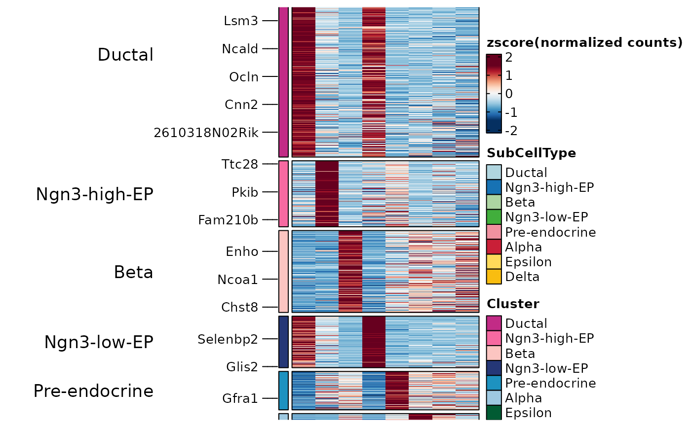
ht1$plot
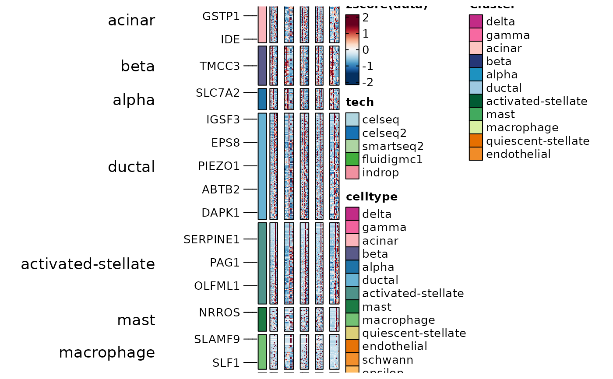
TopMarkers <- AllMarkers |>
dplyr::group_by(gene) |>
dplyr::top_n(1, avg_log2FC) |>
dplyr::group_by(group1) |>
dplyr::top_n(3, avg_log2FC)
ht2 <- GroupHeatmap(
pancreas_sub,
features = TopMarkers$gene,
feature_split = TopMarkers$group1,
group.by = "SubCellType",
show_row_names = TRUE
)
#> ℹ [2026-05-25 10:37:13] The size of the heatmap is fixed because certain elements are not scalable.
#> ℹ [2026-05-25 10:37:13] The width and height of the heatmap are determined by the size of the current viewport.
#> ℹ [2026-05-25 10:37:13] If you want to have more control over the size, you can manually set the parameters 'width' and 'height'.
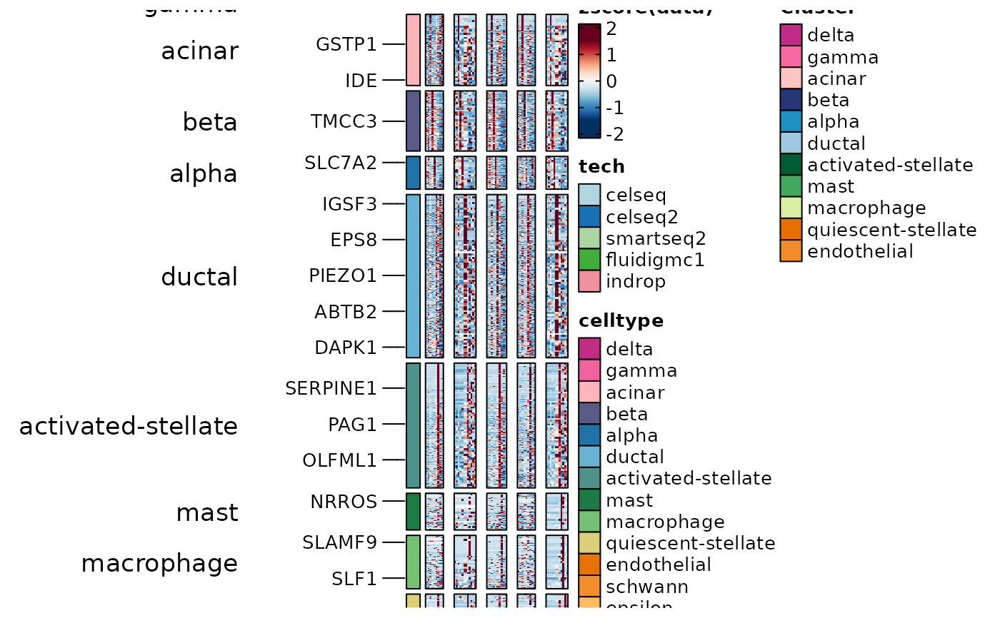
ht2$plot
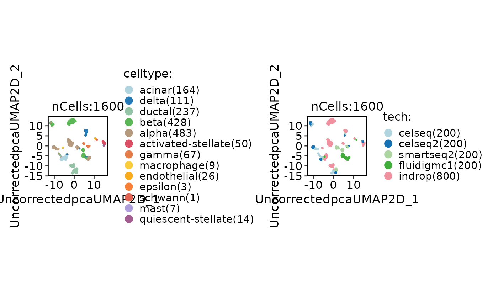
pancreas_sub <- RunDEtest(
pancreas_sub,
group.by = "SubCellType",
markers_type = "paired",
cores = 2
)
#> ℹ [2026-05-25 10:37:15] Data type is log-normalized
#> ℹ [2026-05-25 10:37:15] Start differential expression test
#> ℹ [2026-05-25 10:37:15] Find paired markers(wilcox) among [1] 8 groups...
#> ℹ [2026-05-25 10:37:15] Using 2 cores
#> ⠙ [2026-05-25 10:37:15] Running for 1 [1/56] 2% | ETA: 25s
#> ⠹ [2026-05-25 10:37:15] Running for 4 [3/56] 5% | ETA: 18s
#> ⠸ [2026-05-25 10:37:15] Running for 16 [15/56] ■■ 27% | ETA: 11s
#> ⠼ [2026-05-25 10:37:15] Running for 28 [27/56] ■■■■ 48% | ETA: 7s
#> ⠴ [2026-05-25 10:37:15] Running for 40 [39/56] ■■■■■■ 70% | ETA: 4s
#> ⠦ [2026-05-25 10:37:15] Running for 51 [51/56] ■■■■■■■■■ 91% | ETA: 1s
#> ✔ [2026-05-25 10:37:15] Completed 56 tasks in 14s
#>
#> ℹ [2026-05-25 10:37:15] Building results
#> ✔ [2026-05-25 10:37:29] Differential expression test completed
PairedMarkers <- dplyr::filter(
pancreas_sub@tools$DEtest_SubCellType$PairedMarkers_wilcox,
p_val_adj < 0.05 & avg_log2FC > 1
)
ht3 <- GroupHeatmap(
pancreas_sub,
features = PairedMarkers$gene,
feature_split = PairedMarkers$group1,
group.by = "SubCellType"
)
#> ℹ [2026-05-25 10:38:22] The size of the heatmap is fixed because certain elements are not scalable.
#> ℹ [2026-05-25 10:38:22] The width and height of the heatmap are determined by the size of the current viewport.
#> ℹ [2026-05-25 10:38:22] If you want to have more control over the size, you can manually set the parameters 'width' and 'height'.
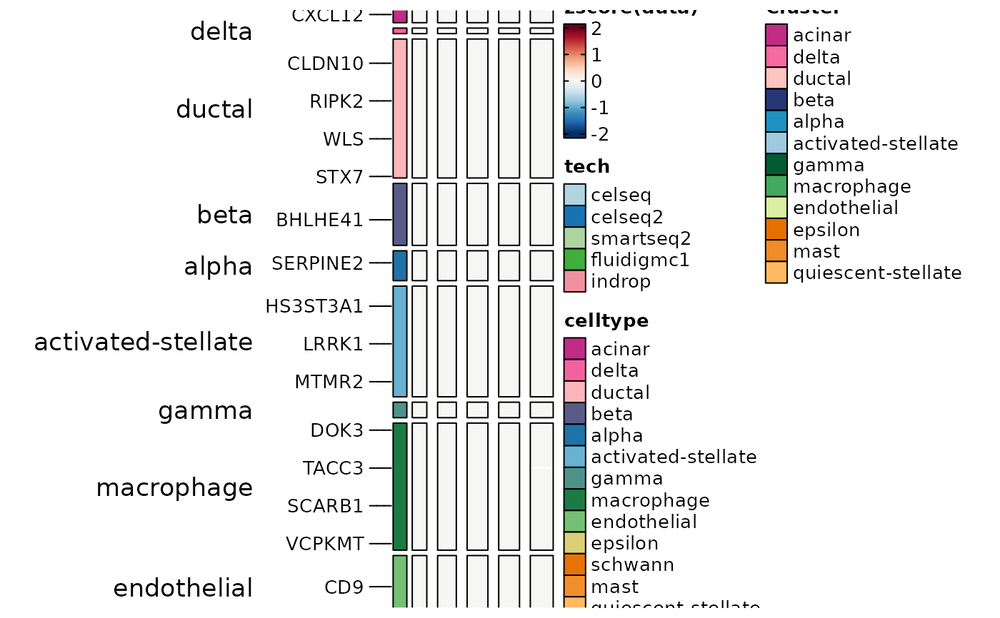
ht3$plot
 data(panc8_sub)
panc8_sub <- integration_scop(
panc8_sub,
batch = "tech",
integration_method = "Uncorrected"
)
#> ◌ [2026-05-25 10:38:26] Run integration workflow...
#> ℹ [2026-05-25 10:38:26] Split `srt_merge` into `srt_list` by "tech"
#> ℹ [2026-05-25 10:38:27] Checking a list of <Seurat>...
#> ! [2026-05-25 10:38:27] Data 1/5 of the `srt_list` is "unknown"
#> ℹ [2026-05-25 10:38:27] Perform `NormalizeData()` with `normalization.method = 'LogNormalize'` on 1/5 of `srt_list`...
#> ℹ [2026-05-25 10:38:29] Perform `Seurat::FindVariableFeatures()` on 1/5 of `srt_list`...
#> ! [2026-05-25 10:38:29] Data 2/5 of the `srt_list` is "unknown"
#> ℹ [2026-05-25 10:38:29] Perform `NormalizeData()` with `normalization.method = 'LogNormalize'` on 2/5 of `srt_list`...
#> ℹ [2026-05-25 10:38:30] Perform `Seurat::FindVariableFeatures()` on 2/5 of `srt_list`...
#> ! [2026-05-25 10:38:31] Data 3/5 of the `srt_list` is "unknown"
#> ℹ [2026-05-25 10:38:31] Perform `NormalizeData()` with `normalization.method = 'LogNormalize'` on 3/5 of `srt_list`...
#> ℹ [2026-05-25 10:38:32] Perform `Seurat::FindVariableFeatures()` on 3/5 of `srt_list`...
#> ! [2026-05-25 10:38:33] Data 4/5 of the `srt_list` is "unknown"
#> ℹ [2026-05-25 10:38:33] Perform `NormalizeData()` with `normalization.method = 'LogNormalize'` on 4/5 of `srt_list`...
#> ℹ [2026-05-25 10:38:34] Perform `Seurat::FindVariableFeatures()` on 4/5 of `srt_list`...
#> ! [2026-05-25 10:38:35] Data 5/5 of the `srt_list` is "unknown"
#> ℹ [2026-05-25 10:38:35] Perform `NormalizeData()` with `normalization.method = 'LogNormalize'` on 5/5 of `srt_list`...
#> ℹ [2026-05-25 10:38:36] Perform `Seurat::FindVariableFeatures()` on 5/5 of `srt_list`...
#> ℹ [2026-05-25 10:38:37] Use the separate HVF from `srt_list`
#> ℹ [2026-05-25 10:38:37] Number of available HVF: 2000
#> ℹ [2026-05-25 10:38:37] Finished check
#> ℹ [2026-05-25 10:38:39] Perform Uncorrected integration
#> Warning: Layer ‘scale.data’ is empty
#> ℹ [2026-05-25 10:38:40] Perform `Seurat::ScaleData()`
#> ℹ [2026-05-25 10:38:40] Perform "pca" linear dimension reduction
#> ℹ [2026-05-25 10:38:41] Adjust neighbor k from 20 to 20 for small-sample clustering
#> ℹ [2026-05-25 10:38:41] Perform `Seurat::FindClusters()` with "louvain"
#> ℹ [2026-05-25 10:38:41] Reorder clusters...
#> ℹ [2026-05-25 10:38:42] Skip `log1p()` because `layer = data` is not "counts"
#> ℹ [2026-05-25 10:38:42] Perform umap nonlinear dimension reduction using Uncorrectedpca (1:20)
#> ℹ [2026-05-25 10:38:47] Perform umap nonlinear dimension reduction using Uncorrectedpca (1:20)
#> ℹ [2026-05-25 10:38:53] Perform umap nonlinear dimension reduction using Uncorrectedpca (1:20)
#> ✔ [2026-05-25 10:39:00] Uncorrected integration completed
CellDimPlot(
panc8_sub,
group.by = c("celltype", "tech")
)
data(panc8_sub)
panc8_sub <- integration_scop(
panc8_sub,
batch = "tech",
integration_method = "Uncorrected"
)
#> ◌ [2026-05-25 10:38:26] Run integration workflow...
#> ℹ [2026-05-25 10:38:26] Split `srt_merge` into `srt_list` by "tech"
#> ℹ [2026-05-25 10:38:27] Checking a list of <Seurat>...
#> ! [2026-05-25 10:38:27] Data 1/5 of the `srt_list` is "unknown"
#> ℹ [2026-05-25 10:38:27] Perform `NormalizeData()` with `normalization.method = 'LogNormalize'` on 1/5 of `srt_list`...
#> ℹ [2026-05-25 10:38:29] Perform `Seurat::FindVariableFeatures()` on 1/5 of `srt_list`...
#> ! [2026-05-25 10:38:29] Data 2/5 of the `srt_list` is "unknown"
#> ℹ [2026-05-25 10:38:29] Perform `NormalizeData()` with `normalization.method = 'LogNormalize'` on 2/5 of `srt_list`...
#> ℹ [2026-05-25 10:38:30] Perform `Seurat::FindVariableFeatures()` on 2/5 of `srt_list`...
#> ! [2026-05-25 10:38:31] Data 3/5 of the `srt_list` is "unknown"
#> ℹ [2026-05-25 10:38:31] Perform `NormalizeData()` with `normalization.method = 'LogNormalize'` on 3/5 of `srt_list`...
#> ℹ [2026-05-25 10:38:32] Perform `Seurat::FindVariableFeatures()` on 3/5 of `srt_list`...
#> ! [2026-05-25 10:38:33] Data 4/5 of the `srt_list` is "unknown"
#> ℹ [2026-05-25 10:38:33] Perform `NormalizeData()` with `normalization.method = 'LogNormalize'` on 4/5 of `srt_list`...
#> ℹ [2026-05-25 10:38:34] Perform `Seurat::FindVariableFeatures()` on 4/5 of `srt_list`...
#> ! [2026-05-25 10:38:35] Data 5/5 of the `srt_list` is "unknown"
#> ℹ [2026-05-25 10:38:35] Perform `NormalizeData()` with `normalization.method = 'LogNormalize'` on 5/5 of `srt_list`...
#> ℹ [2026-05-25 10:38:36] Perform `Seurat::FindVariableFeatures()` on 5/5 of `srt_list`...
#> ℹ [2026-05-25 10:38:37] Use the separate HVF from `srt_list`
#> ℹ [2026-05-25 10:38:37] Number of available HVF: 2000
#> ℹ [2026-05-25 10:38:37] Finished check
#> ℹ [2026-05-25 10:38:39] Perform Uncorrected integration
#> Warning: Layer ‘scale.data’ is empty
#> ℹ [2026-05-25 10:38:40] Perform `Seurat::ScaleData()`
#> ℹ [2026-05-25 10:38:40] Perform "pca" linear dimension reduction
#> ℹ [2026-05-25 10:38:41] Adjust neighbor k from 20 to 20 for small-sample clustering
#> ℹ [2026-05-25 10:38:41] Perform `Seurat::FindClusters()` with "louvain"
#> ℹ [2026-05-25 10:38:41] Reorder clusters...
#> ℹ [2026-05-25 10:38:42] Skip `log1p()` because `layer = data` is not "counts"
#> ℹ [2026-05-25 10:38:42] Perform umap nonlinear dimension reduction using Uncorrectedpca (1:20)
#> ℹ [2026-05-25 10:38:47] Perform umap nonlinear dimension reduction using Uncorrectedpca (1:20)
#> ℹ [2026-05-25 10:38:53] Perform umap nonlinear dimension reduction using Uncorrectedpca (1:20)
#> ✔ [2026-05-25 10:39:00] Uncorrected integration completed
CellDimPlot(
panc8_sub,
group.by = c("celltype", "tech")
)
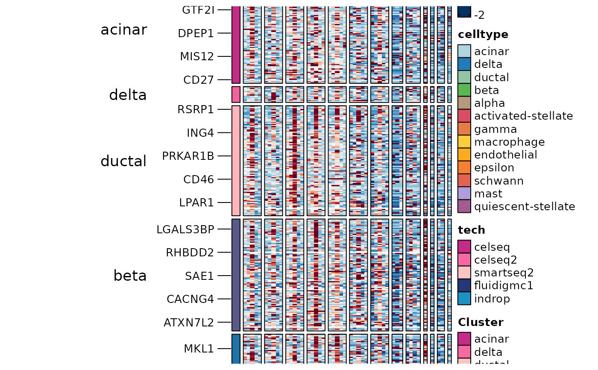
panc8_sub <- RunDEtest(
srt = panc8_sub,
group.by = "celltype",
grouping.var = "tech",
markers_type = "conserved",
cores = 2
)
#> ℹ [2026-05-25 10:39:32] Data type is log-normalized
#> ℹ [2026-05-25 10:39:32] Start differential expression test
#> ℹ [2026-05-25 10:39:32] Find conserved markers(wilcox) among [1] 13 groups...
#> ℹ [2026-05-25 10:39:32] Using 2 cores
#> ⠙ [2026-05-25 10:39:32] Running for gamma [1/13] 8% | ETA: 24s
#> ⠹ [2026-05-25 10:39:32] Running for acinar [3/13] ■■ 23% | ETA: 15s
#> ⠸ [2026-05-25 10:39:32] Running for ductal [6/13] ■■■■ 46% | ETA: 9s
#> ⠼ [2026-05-25 10:39:32] Running for quiescent-stellate [10/13] ■■■■■■■ 77% …
#> ✔ [2026-05-25 10:39:32] Completed 13 tasks in 12.1s
#>
#> ℹ [2026-05-25 10:39:32] Building results
#> ✔ [2026-05-25 10:39:45] Differential expression test completed
ConservedMarkers1 <- dplyr::filter(
panc8_sub@tools$DEtest_celltype$ConservedMarkers_wilcox,
p_val_adj < 0.05 & avg_log2FC > 1
)
ht4 <- GroupHeatmap(
panc8_sub,
layer = "data",
features = ConservedMarkers1$gene,
feature_split = ConservedMarkers1$group1,
group.by = "tech",
split.by = "celltype",
within_groups = TRUE
)
#> `use_raster` is automatically set to TRUE for a matrix with more than
#> 2000 rows. You can control `use_raster` argument by explicitly setting
#> TRUE/FALSE to it.
#>
#> Set `ht_opt$message = FALSE` to turn off this message.
#> `use_raster` is automatically set to TRUE for a matrix with more than
#> 2000 rows. You can control `use_raster` argument by explicitly setting
#> TRUE/FALSE to it.
#>
#> Set `ht_opt$message = FALSE` to turn off this message.
#> ℹ [2026-05-25 10:39:55] The size of the heatmap is fixed because certain elements are not scalable.
#> ℹ [2026-05-25 10:39:55] The width and height of the heatmap are determined by the size of the current viewport.
#> ℹ [2026-05-25 10:39:55] If you want to have more control over the size, you can manually set the parameters 'width' and 'height'.
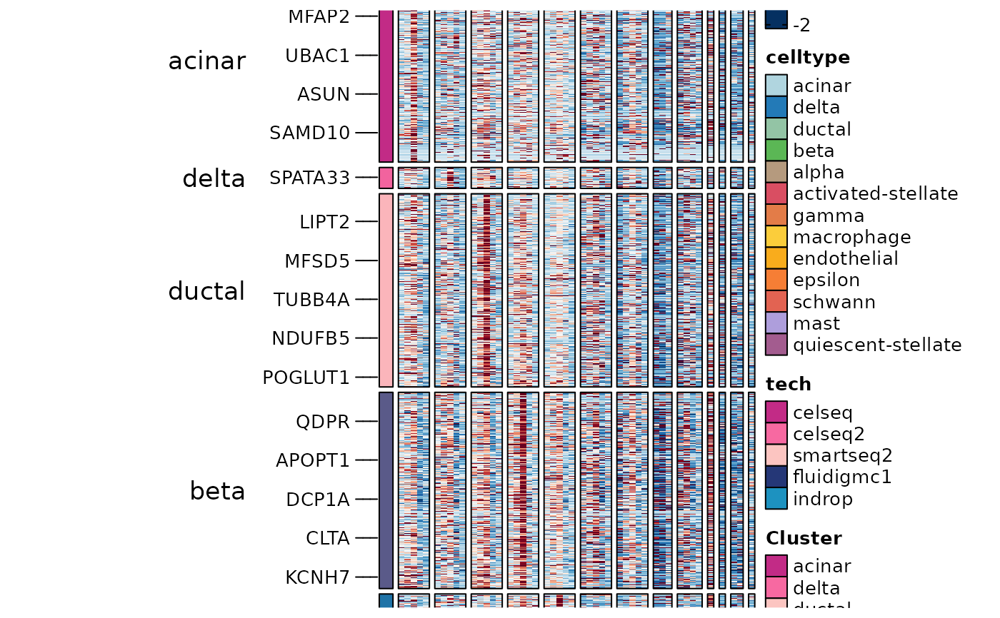
ht4$plot
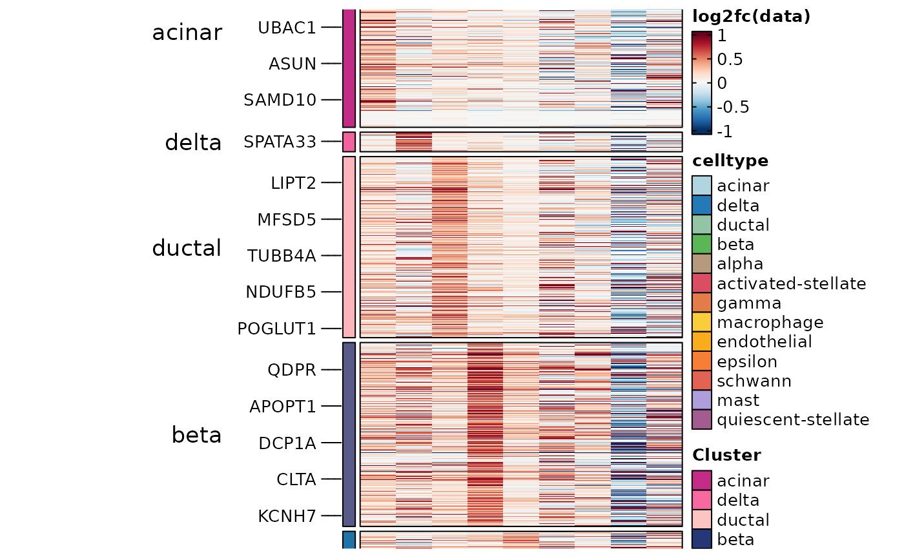
panc8_sub <- RunDEtest(
srt = panc8_sub,
group.by = "tech",
grouping.var = "celltype",
markers_type = "conserved",
cores = 2
)
#> ℹ [2026-05-25 10:40:05] Data type is log-normalized
#> ℹ [2026-05-25 10:40:05] Start differential expression test
#> ℹ [2026-05-25 10:40:05] Find conserved markers(wilcox) among [1] 5 groups...
#> ℹ [2026-05-25 10:40:05] Using 2 cores
#> ⠙ [2026-05-25 10:40:05] Running for celseq [1/5] ■■ 20% | ETA: 10s
#> ⠹ [2026-05-25 10:40:05] Running for fluidigmc1 [3/5] ■■■■■■ 60% | ETA: 4s
#> ✔ [2026-05-25 10:40:05] Completed 5 tasks in 9s
#>
#> ℹ [2026-05-25 10:40:05] Building results
#> ✔ [2026-05-25 10:40:15] Differential expression test completed
ConservedMarkers2 <- dplyr::filter(
panc8_sub@tools$DEtest_tech$ConservedMarkers_wilcox,
p_val_adj < 0.05 & avg_log2FC > 1
)
ht4 <- GroupHeatmap(
srt = panc8_sub,
layer = "data",
features = ConservedMarkers2$gene,
feature_split = ConservedMarkers2$group1,
group.by = "tech",
split.by = "celltype"
)
#> ℹ [2026-05-25 10:40:18] The size of the heatmap is fixed because certain elements are not scalable.
#> ℹ [2026-05-25 10:40:18] The width and height of the heatmap are determined by the size of the current viewport.
#> ℹ [2026-05-25 10:40:18] If you want to have more control over the size, you can manually set the parameters 'width' and 'height'.
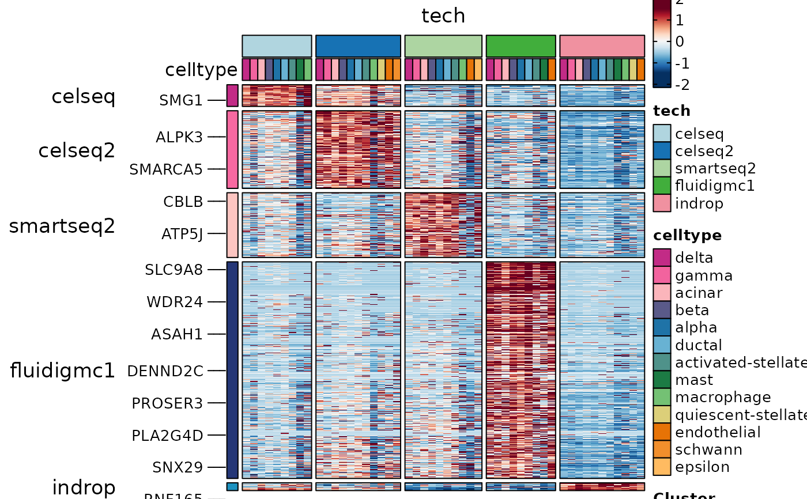
ht4$plot
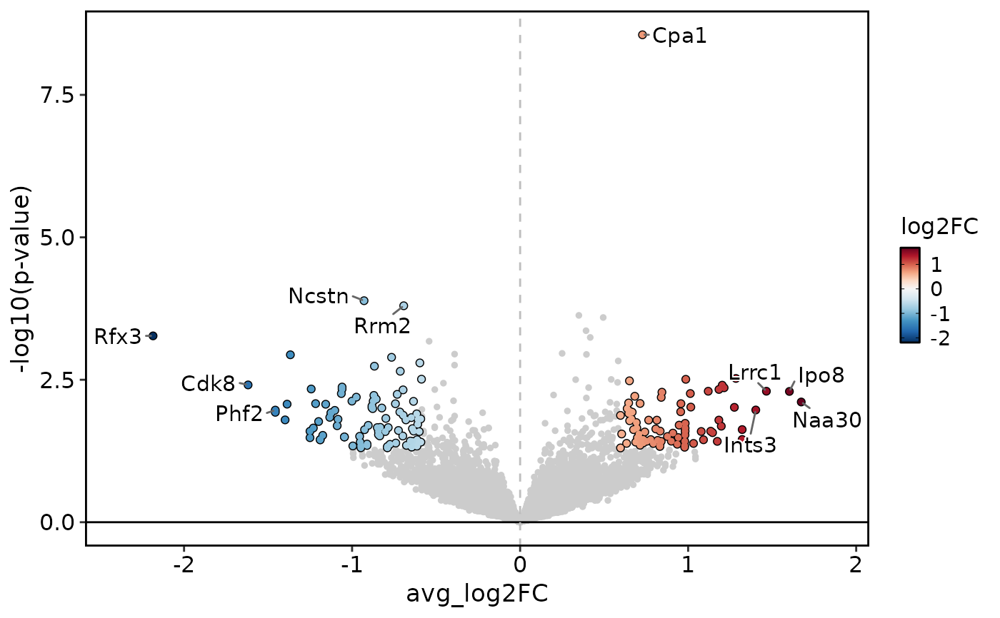
panc8_sub <- RunDEtest(
srt = panc8_sub,
group.by = "celltype",
grouping.var = "tech",
markers_type = "disturbed",
cores = 2
)
#> ℹ [2026-05-25 10:40:23] Data type is log-normalized
#> ℹ [2026-05-25 10:40:23] Start differential expression test
#> ℹ [2026-05-25 10:40:23] Find disturbed markers(wilcox) among [1] 13 groups...
#> ℹ [2026-05-25 10:40:23] Using 2 cores
#> ⠙ [2026-05-25 10:40:23] Running for gamma [1/13] 8% | ETA: 42s
#> ⠹ [2026-05-25 10:40:23] Running for acinar [3/13] ■■ 23% | ETA: 24s
#> ⠸ [2026-05-25 10:40:23] Running for alpha [5/13] ■■■ 38% | ETA: 18s
#> ⠼ [2026-05-25 10:40:23] Running for mast [7/13] ■■■■■ 54% | ETA: 11s
#> ⠴ [2026-05-25 10:40:23] Running for quiescent-stellate [10/13] ■■■■■■■ 77% …
#> ✔ [2026-05-25 10:40:23] Completed 13 tasks in 18.2s
#>
#> ℹ [2026-05-25 10:40:23] Building results
#> ✔ [2026-05-25 10:40:42] Differential expression test completed
DisturbedMarkers <- dplyr::filter(
panc8_sub@tools$DEtest_celltype$DisturbedMarkers_wilcox,
p_val_adj < 0.05 & avg_log2FC > 1 & var1 == "smartseq2"
)
ht5 <- GroupHeatmap(
srt = panc8_sub,
layer = "data",
features = DisturbedMarkers$gene,
feature_split = DisturbedMarkers$group1,
group.by = "celltype",
split.by = "tech"
)
#> `use_raster` is automatically set to TRUE for a matrix with more than
#> 2000 rows. You can control `use_raster` argument by explicitly setting
#> TRUE/FALSE to it.
#>
#> Set `ht_opt$message = FALSE` to turn off this message.
#> ℹ [2026-05-25 10:40:56] The size of the heatmap is fixed because certain elements are not scalable.
#> ℹ [2026-05-25 10:40:56] The width and height of the heatmap are determined by the size of the current viewport.
#> ℹ [2026-05-25 10:40:56] If you want to have more control over the size, you can manually set the parameters 'width' and 'height'.
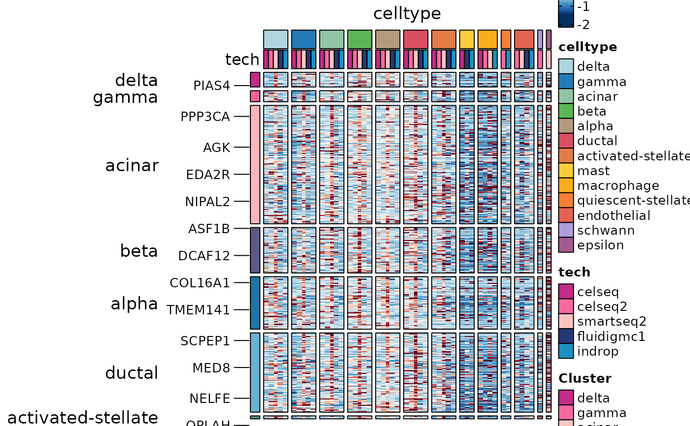
ht5$plot
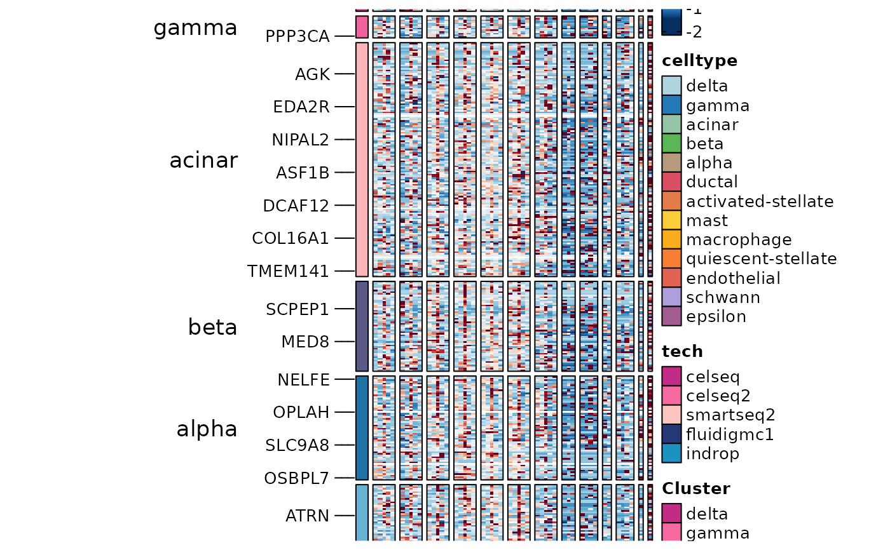
gene_specific <- names(which(table(DisturbedMarkers$gene) == 1))
DisturbedMarkers_specific <- DisturbedMarkers[
DisturbedMarkers$gene %in% gene_specific,
]
ht6 <- GroupHeatmap(
srt = panc8_sub,
layer = "data",
features = DisturbedMarkers_specific$gene,
feature_split = DisturbedMarkers_specific$group1,
group.by = "celltype",
split.by = "tech"
)
#> ℹ [2026-05-25 10:41:14] The size of the heatmap is fixed because certain elements are not scalable.
#> ℹ [2026-05-25 10:41:14] The width and height of the heatmap are determined by the size of the current viewport.
#> ℹ [2026-05-25 10:41:14] If you want to have more control over the size, you can manually set the parameters 'width' and 'height'.
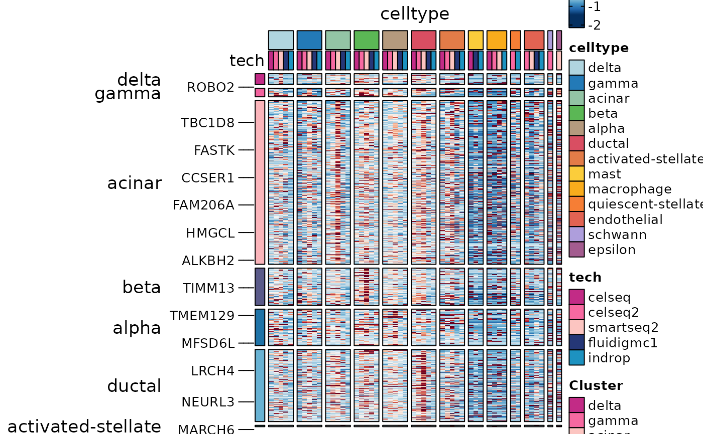
ht6$plot
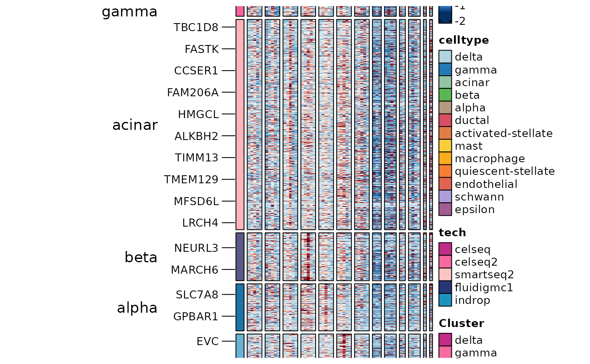
ht7 <- GroupHeatmap(
srt = panc8_sub,
layer = "data",
aggregate_fun = function(x) mean(expm1(x)) + 1,
features = DisturbedMarkers_specific$gene,
feature_split = DisturbedMarkers_specific$group1,
group.by = "celltype",
grouping.var = "tech",
numerator = "smartseq2"
)
#> ! [2026-05-25 10:41:26] When 'grouping.var' is specified, 'exp_method' can only be 'log2fc'
#> ℹ [2026-05-25 10:41:28] The size of the heatmap is fixed because certain elements are not scalable.
#> ℹ [2026-05-25 10:41:28] The width and height of the heatmap are determined by the size of the current viewport.
#> ℹ [2026-05-25 10:41:28] If you want to have more control over the size, you can manually set the parameters 'width' and 'height'.
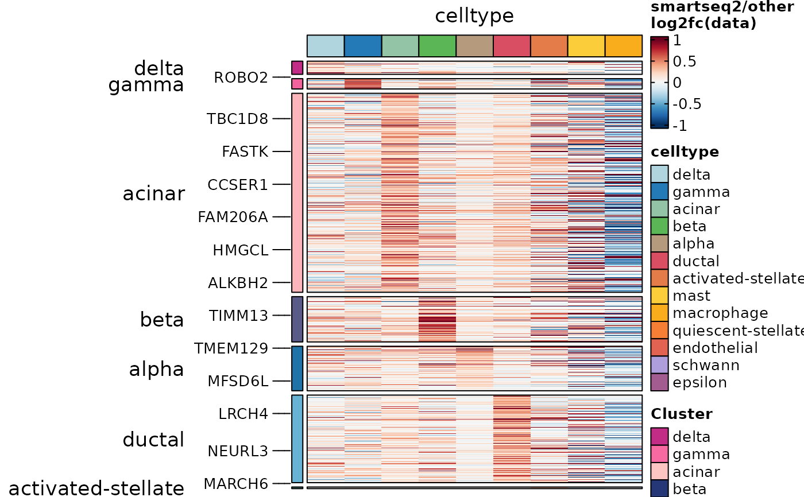
ht7$plot
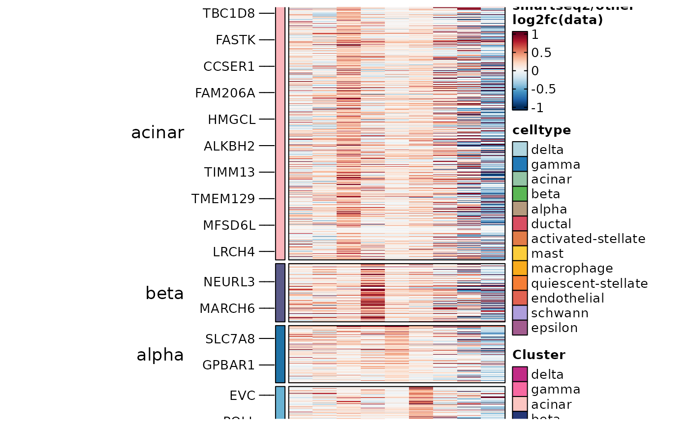
cell_index <- ave(
seq_along(pancreas_sub$CellType),
pancreas_sub$CellType,
FUN = seq_along
)
pancreas_sub[["sample"]] <- paste0(
"S",
(cell_index - 1) %% 4 + 1
)
pancreas_sub[["condition"]] <- ifelse(
pancreas_sub$sample %in% c("S1", "S2"),
"ctrl",
"case"
)
pancreas_sub <- RunDEtest(
pancreas_sub,
group.by = "CellType",
sample_col = "sample",
condition_col = "condition",
test.use = "limma",
fc.threshold = 1,
layer = "counts",
only.pos = FALSE
)
#> ℹ [2026-05-25 10:41:30] Start sample-level differential testing
#> calcNormFactors has been renamed to normLibSizes
#> calcNormFactors has been renamed to normLibSizes
#> calcNormFactors has been renamed to normLibSizes
#> calcNormFactors has been renamed to normLibSizes
#> calcNormFactors has been renamed to normLibSizes
#> ✔ [2026-05-25 10:41:32] Sample-level differential testing completed
DEtestPlot(
pancreas_sub,
group.by = "CellType",
test.use = "limma",
group_use = "Ductal",
plot_type = "volcano",
x_metric = "avg_log2FC",
y_metric = "p_val"
)
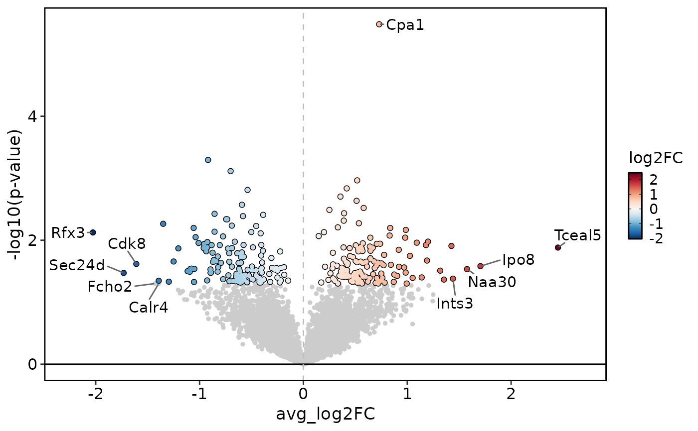
pancreas_sub <- RunDEtest(
pancreas_sub,
group.by = "CellType",
sample_col = "sample",
condition_col = "condition",
test.use = "edgeR",
layer = "counts",
fc.threshold = 1,
only.pos = FALSE
)
#> ℹ [2026-05-25 10:41:32] Start sample-level differential testing
#> calcNormFactors has been renamed to normLibSizes
#> calcNormFactors has been renamed to normLibSizes
#> calcNormFactors has been renamed to normLibSizes
#> calcNormFactors has been renamed to normLibSizes
#> calcNormFactors has been renamed to normLibSizes
#> ✔ [2026-05-25 10:41:35] Sample-level differential testing completed
DEtestPlot(
pancreas_sub,
group.by = "CellType",
test.use = "edgeR",
group_use = "Ductal",
plot_type = "volcano",
x_metric = "avg_log2FC",
y_metric = "p_val",
DE_threshold = "abs(avg_log2FC) > log2(1.5) & p_val < 0.05"
)
 data(islet_bulk)
bulk_out <- RunDEtest(
islet_bulk,
condition_col = "condition",
group1 = "control",
group2 = "bfa",
test.use = "edgeR",
only.pos = FALSE,
fc.threshold = 1
)
#> calcNormFactors has been renamed to normLibSizes
DEtestPlot(
bulk_out,
test.use = "edgeR",
plot_type = "volcano",
x_metric = "avg_log2FC",
y_metric = "p_val"
)
data(islet_bulk)
bulk_out <- RunDEtest(
islet_bulk,
condition_col = "condition",
group1 = "control",
group2 = "bfa",
test.use = "edgeR",
only.pos = FALSE,
fc.threshold = 1
)
#> calcNormFactors has been renamed to normLibSizes
DEtestPlot(
bulk_out,
test.use = "edgeR",
plot_type = "volcano",
x_metric = "avg_log2FC",
y_metric = "p_val"
)
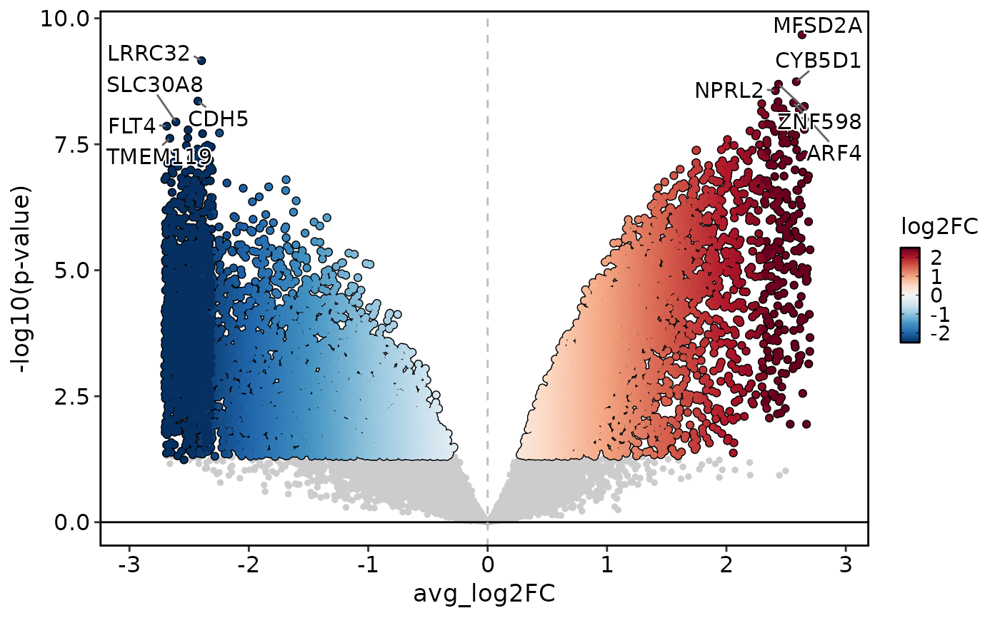